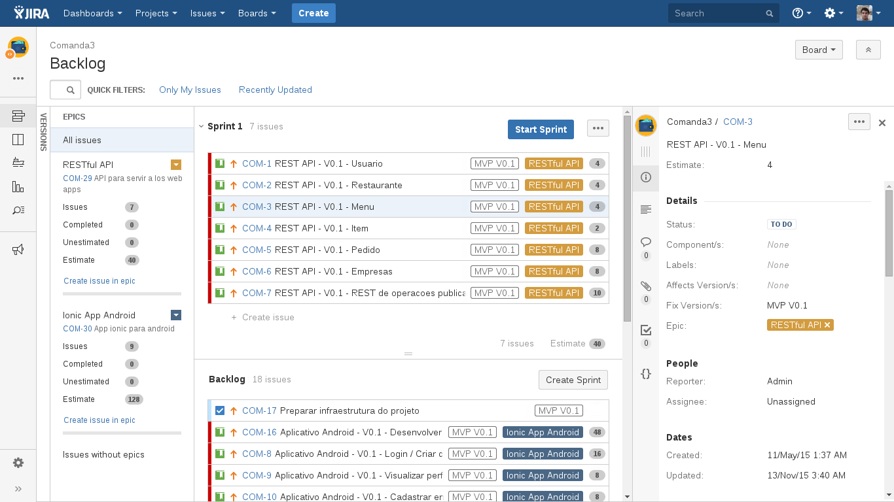

JIRA Agile
101 turbo
Luis Valdés / @_lvlds
JIRA Agile
- Introduccion a conceptos agile
- JIRA Agile Plan, work, track
- Incidencias y dashboards en JIRA
- JIRA Excelsis con Itaipu
Que es una tarea?
una actividad que dura mas de 30 minutos

pero menos de 3 dias
Cuanto tiempo requiere una tarea?
Story points
- 30 mins = 1 story point
- 1 hora = 2 story points
- 2 horas = 4 story points
- 4 horas = 8 story points
- 1 dia = 16 story points
- 2 dias = 32 story points
- 3 dias = 48 story points
Como crear una incidecia
Scrum
- equipos con plazos de entrega
- las prioridades estan organizadas en bloques llamados sprints
Kanban
- equipos de soporte y servicios
- trabajan sobre una lista de prioridades continuas
- no existe planificacion, no hay sprints
Planificando..
Planificando..
Trabajando
Incidencias y dashboards en JIRA
JIRA + Excelsis + Itaipu
App Ejecucion de Servicios
- Datos de servicios ejecutados se obtienen del JIRA
- Cantidad de horas empleadas se obtienen del JIRA
- Genera el documento PES en formato Excel
Trabajando con Itaipu
Dentro de la aplicacion sera posible registrar
- Contrato
- Orden de Servicio
- Planilla de Ejecución de Servicio
- Servicio